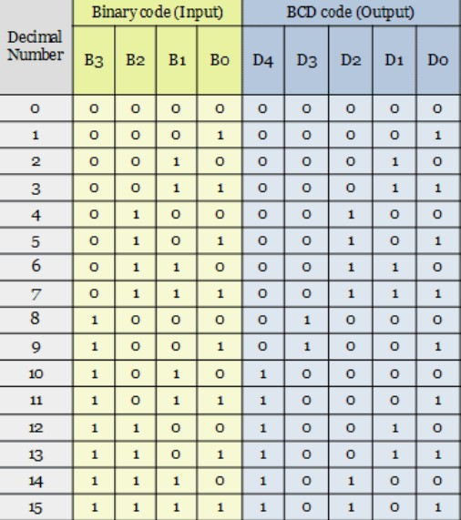
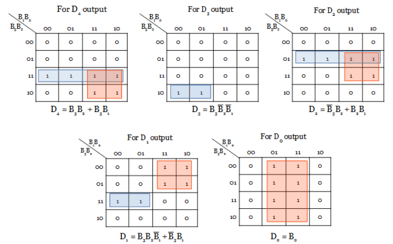
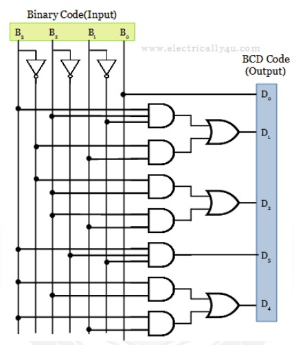

Binary To BCD Code Convertor
For BCD code, 0 to 9 numbers represent the equivalent binary numbers. For the numbers above 10, LSB of a decimal number is represented by its equivalent binary number and MSB of a decimal number is also represented by their equivalent binary numbers. The following truth table shows the conversion between the binary code input and the BCD code output. As you see from the table, the 4-bit binary number is converted into 5-bit BCD code. Decimal code is added in the table to understand the equivalence of Binary and BCD code.
The converter has 5 outputs D0, D1, D2, D3 and D4. From the truth table, the minterms can be obtained for each output.
Minterms:
D0 = ∑m(1, 3, 5, 7, 9, 11, 13, 15)
D1 = ∑m(2, 3, 6, 7, 12, 13)
D2 = ∑m(4, 5, 6, 7, 14, 15)
D3 = ∑m(8, 9)
D4 = ∑m(10, 11, 12, 13, 14, 15)
Truth Table:
K-Map:
Logic Diagram:
